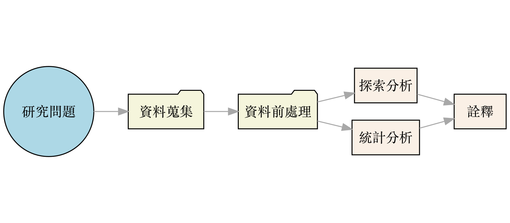
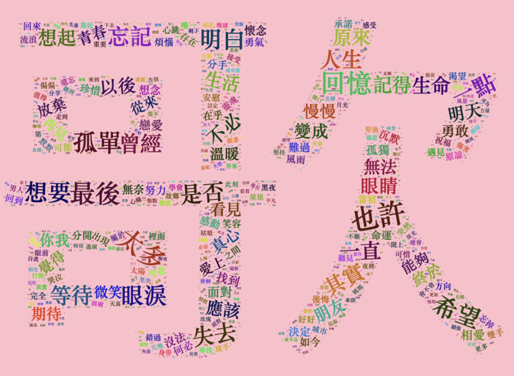
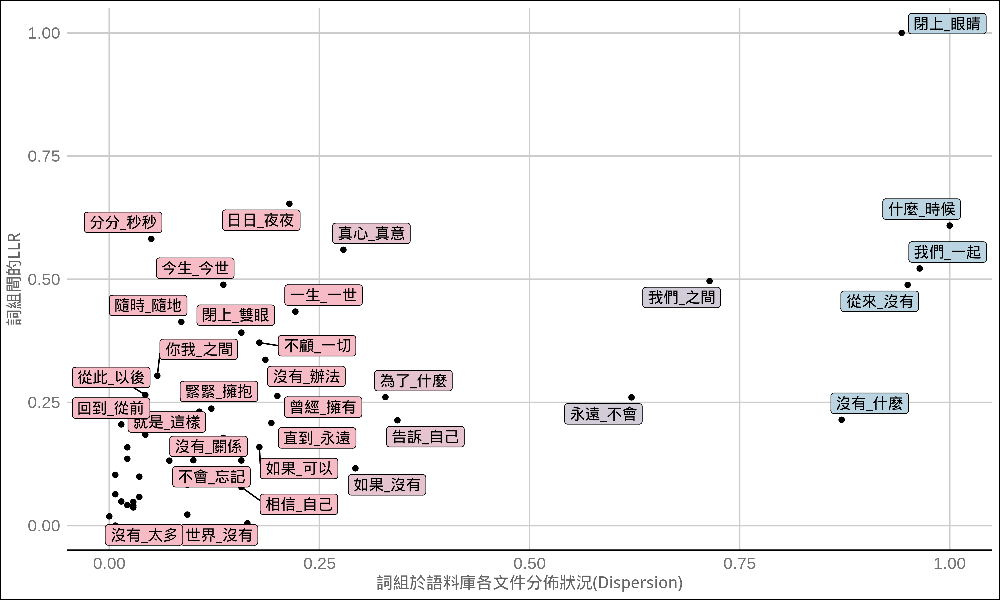
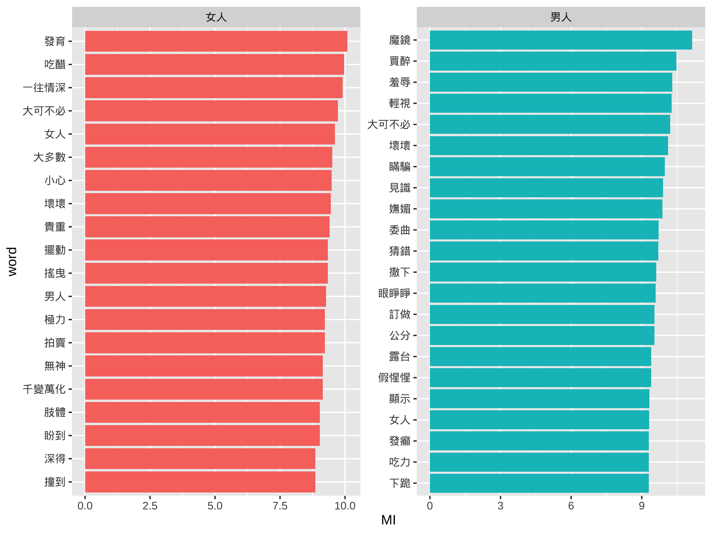
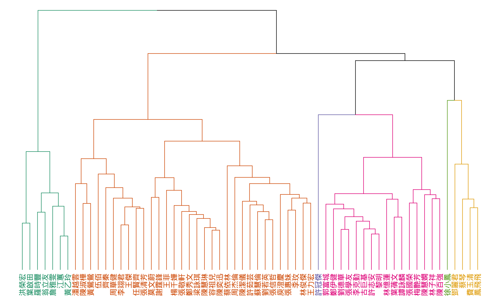
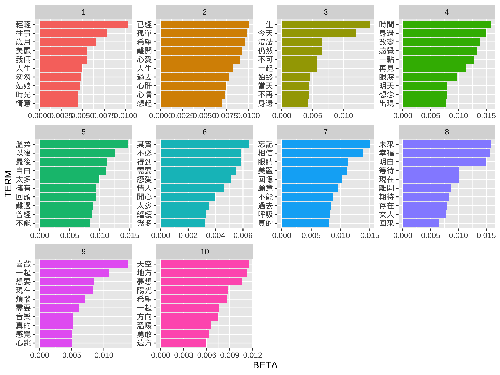
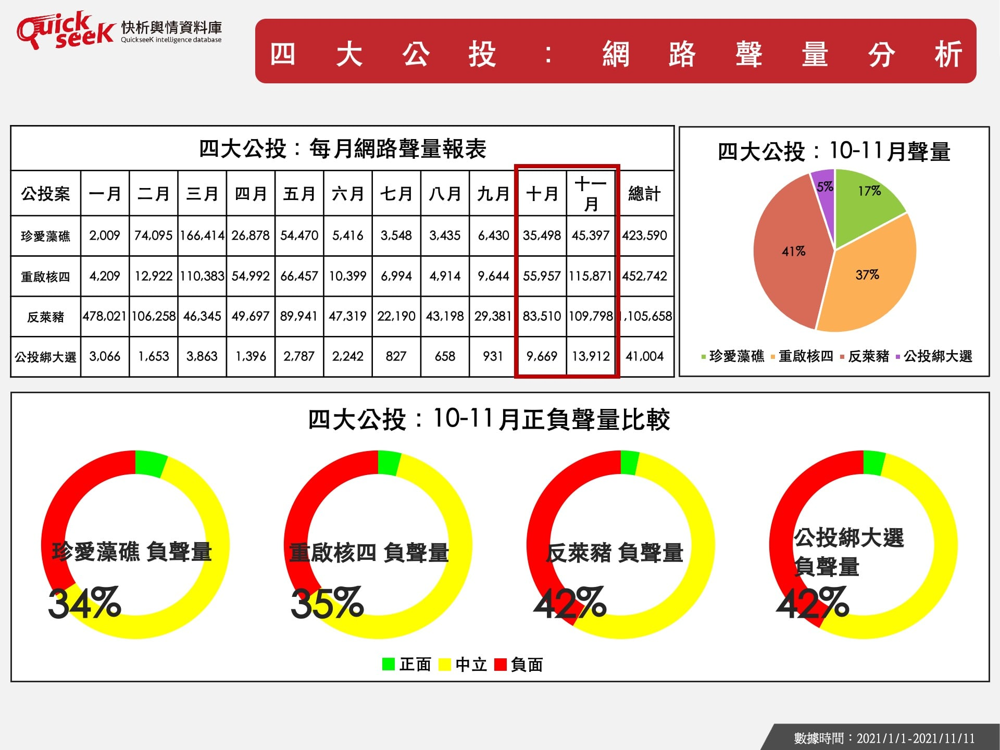
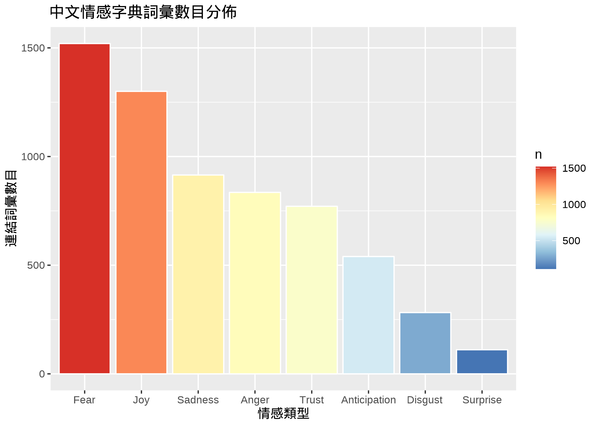
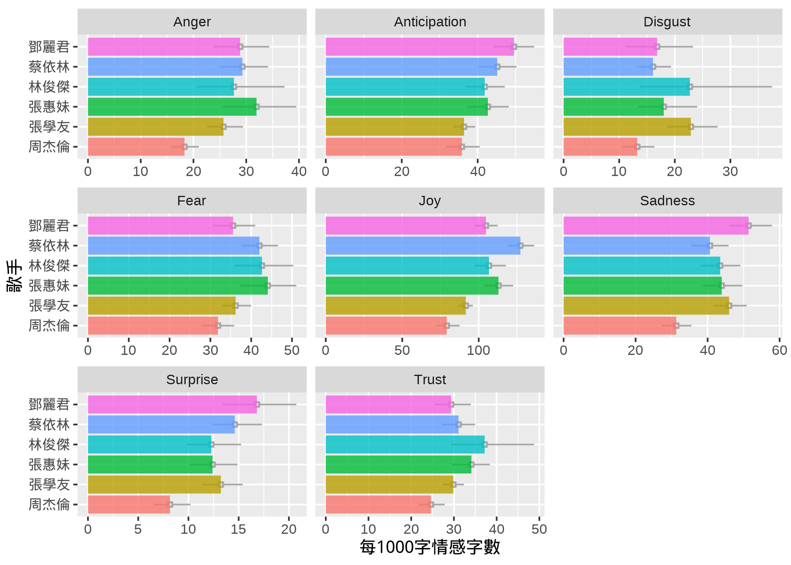

語料庫語言學：
語言的數據之旅
陳正賢(Alvin Cheng-Hsien Chen)

背景介紹
語料庫語言學是什麼呢？
- 當我們學習一門語言時，我們需要了解該語言的語法、詞彙和用法。
- 語料庫語言學是一種基於語言使用實例（即語料庫）作為研究言語使用的研究方法。
- 語言學家可以通過分析語料庫中的實際語言使用情況來研究語言的結構和用法。
- 研究者也可透過語料庫，挖掘潛在的語言使用趨勢或模式。
什麼是語料庫？
- 語料庫就是一個大型且機器可讀取的文字資料庫。
- 可以人工收集建立，也可以是透個電腦程式(半)自動搜集與建立。
- 語料庫建置時考量的重點：
- 代表性(單一樣本可否代表類型全體？)
- 平衡性(樣本種類是否可涵蓋全部類型？)
- 真實性(樣本是否為真實語境語言使用？)
常見的語料庫
常用的語料庫工具
如何開始一個語料庫分析呢？
一個典型資料分析流程

以「華語流行音樂」為例
- 我的研究問題是什麼？
- 從哪搜集資料？
- 現有公開語料庫？
- 自行搜集？
- 我是否可以取得足夠相關語言現象的樣本？
我們能從語料庫挖出什麼有意思的東西呢？
以華語流行音樂歌詞庫為例
歌詞文本
對這個世界如果你有太多的抱怨
跌倒了就不敢繼續往前走
為什麼人要這麼的脆弱 墮落
請你打開電視看看
多少人為生命在努力勇敢的走下去
我們是不是該知足
珍惜一切 就算沒有擁有
還記得你說家是唯一的城堡 隨著稻香河流繼續奔跑
微微笑 小時候的夢我知道
不要哭讓螢火蟲帶著你逃跑 鄉間的歌謠永遠的依靠
回家吧 回到最初的美好
不要這麼容易就想放棄 就像我說的
追不到的夢想 換個夢不就得了
為自己的人生鮮艷上色 先把愛塗上喜歡的顏色
笑一個吧 功成名就不是目的
讓自己快樂快樂這才叫做意義
童年的紙飛機 現在終於飛回我手裡
所謂的那快樂 赤腳在田裡追蜻蜓追到累了
偷摘水果被蜜蜂給叮到怕了 誰在偷笑呢
我靠著稻草人吹著風唱著歌睡著了
哦 哦 午後吉他在蟲鳴中更清脆
哦 哦 陽光灑在路上就不怕心碎
珍惜一切 就算沒有擁有
還記得你說家是唯一的城堡 隨著稻香河流繼續奔跑
微微笑 小時候的夢我知道
不要哭讓螢火蟲帶著你逃跑 鄉間的歌謠永遠的依靠
回家吧 回到最初的美好斷詞後文本
對(P) 這(Nep) 個(Nf) 世界(Nc) 如果(Cbb) 你(Nh) 有(V_2) 太多(Neqa) 的(DE) 抱怨(VE)
跌倒(VA) 了(Di) 就(D) 不(D) 敢(VL) 繼續(VF) 往(P) 前(Ncd) 走(VA)
為什麼(D) 人(Na) 要(D) 這麼(VH) 的(DE) 脆弱(VH) 墮落(VH)
請(VF) 你(Nh) 打開(VC) 電視(Na) 看看(VC)
多少(Neqa) 人(Na) 為(P) 生命(Na) 在(P) 努力(VH) 勇敢(VH) 的(DE) 走下去(VA)
我們(Nh) 是(SHI) 不(D) 是(SHI) 該(D) 知足(VH)
珍惜(VJ) 一切(Neqa) 就算(D) 沒有(D) 擁有(VJ)
還(D) 記得(VK) 你(Nh) 說(VE) 家(Nc) 是(SHI) 唯一(A) 的(DE) 城堡(Na) 隨著(P) 稻香(Na) 河流(Na) 繼續(VF) 奔跑(VA)
微微笑(D) 小時候(Nd) 的(DE) 夢(Na) 我(Nh) 知道(VK)
不要(D) 哭(VA) 讓(VL) 螢火蟲(Na) 帶(VC) 著(Di) 你(Nh) 逃跑(VA) 鄉間(Nc) 的(DE) 歌謠(Na) 永遠(D) 的(DE) 依靠(VC)
回家(VA) 吧(T) 回到(VCL) 最初(Nd) 的(DE) 美好(VH)
不要(D) 這麼(Dfa) 容易(VH) 就(D) 想(VE) 放棄(VC) 就(D) 像(P) 我(Nh) 說(VE) 的(DE)
追(VC) 不(D) 到(VC) 的(DE) 夢想(Na) 換(VC) 個(Di) 夢(Na) 不(D) 就(D) 得(VH) 了(T)
為(P) 自己(Nh) 的(DE) 人生(Na) 鮮艷(VH) 上色(VA) 先(D) 把(P) 愛(VL) 塗上(VC) 喜歡(VK) 的(DE) 顏色(Na)
笑(VA) 一(Neu) 個(Nf) 吧(T) 功成名(VH) 就(D) 不(D) 是(SHI) 目的(Na)
讓(VL) 自己(Nh) 快樂(VH) 快樂(VH) 這(Nep) 才(Da) 叫做(VG) 意義(Na)
童年(Na) 的(DE) 紙(Na) 飛機(Na) 現在(Nd) 終於(D) 飛回(VCL) 我(Nh) 手(Na) 裡(Ncd)
所謂(VK) 的(DE) 那(Nep) 快樂(VH) 赤腳(Na) 在(P) 田(Na) 裡(Ncd) 追(VC) 蜻蜓(Na) 追到(VC) 累(VHC) 了(Di)
偷摘(VC) 水果(Na) 被(P) 蜜蜂(Na) 給(VD) 叮到(VC) 怕(VK) 了(Di) 誰(Nh) 在(P) 偷笑(VA) 呢(T)
我(Nh) 靠(VJ) 著(Di) 稻草人(Na) 吹(VC) 著(Di) 風(Na) 唱(VC) 著(Di) 歌(Na) 睡著(VH) 了(T)
哦(T) 哦(T) 午後(Nd) 吉他(Na) 在(P) 蟲鳴(Na) 中(Ng) 更(Dfa) 清脆(VH)
哦(T) 哦(T) 陽光(Na) 灑(VC) 在(P) 路(Na) 上(Ng) 就(D) 不(D) 怕(VK) 心碎(VH)
珍惜(VJ) 一切(Neqa) 就算(Cbb) 沒有(D) 擁有(VJ)
還(D) 記得(VK) 你(Nh) 說(VE) 家(Nc) 是(SHI) 唯一(A) 的(DE) 城堡(Na) 隨著(P) 稻香(Na) 河流(Na) 繼續(VF) 奔跑(VA)
微微笑(D) 小時候(Nd) 的(DE) 夢(Na) 我(Nh) 知道(VK)
不要(D) 哭(VA) 讓(VL) 螢火蟲(Na) 帶(VC) 著(Di) 你(Nh) 逃跑(VA) 鄉間(Nc) 的(DE) 歌謠(Na) 永遠(D) 的(DE) 依靠(VC)
回家(VA) 吧(T) 回到(VCL) 最初(Nd) 的(DE) 美好(VH)詞頻探索
文件與詞彙分佈 (Document-Term Matrix)
詞雲圖

語詞索引列 (Concordances/KWIC)
搭配詞（多字詞組）
歌曲中常見搭配詞組

特定詞組搭配詞

關鍵詞
文本相似性比較

主題建模

情感（輿情）分析

什麼是情感分析？
- 情感分析(Sentiment Analysis)是近幾年計算語言學相當熱門的主題，在許多領域等可以看見情感分析的應用。
- 情感(Sentiment)是我們語言互動溝通中，除了事件傳達外，另一項很重要的任務。
- 透過大量的語言資料，我們可以透過計算文本分析(Computational Text Analytic)的方式，分析在某個特定場域(genre)裡，對於特定「主題」、「人物」、「產品」、「物件」等之普遍情感偏好，結果可以二分(Binary)的方式呈現（如：正向/負向）或以數值(Continuous)呈現（如：正向分數0.8)。
- 情感亦可針對不同情緒進一步細分為「開心」、「難過」、「憤怒」等。
中文情感字典
我們依據英文的NRC Word-Emotion Association Lexicon，建立了中文的情感字典。

歌手與情感

語料庫分析該注意些什麼呢？
- 工具
- 量化分析
- 結果與視覺化呈現
- 詮釋
工具
- 要多熟悉數位工具(Tools for Corpus Linguistics)
- 幾乎沒有一個語料庫工具，可以給你全部可用的分析方法，不如試著學習Coding!
- 你的研究問題，不應該受限於所使用的工具！
量化分析
- 一個語言現象頻率高有可能只是碰巧！
- 任何觀察到的數字，都需要更嚴謹的(統計？)方法，來判斷它的顯著性與重要性！
- 該面對的還是要面對，統計要好好學！
結果與視覺化呈現
- 學習Markdown語言，撰寫多模報告！
- Markdown使用簡單的標記語法，讓研究者可以將資料、分析、統計、到詮釋相關程式碼、文本、圖片等內容，可以輕鬆地結合在一起，並且可以快速地編輯和更新。
- Jupyter Notebooks, R Markdown
- 學習畫有意義的圖表！
- 人類是視覺化生物，我們更容易通過圖形和圖表來理解和記憶數據，相比於冗長的數字和文字描述，資料視覺化可以將複雜的數據轉換為清晰直觀的圖像，使得數據更容易被理解。
詮釋
- 研究不是丟出一堆數字、圖表就好，要言之有道！
- 語料庫找到趨勢、現象或分佈，更有意思的是，研究者的解釋！
- 想想當初研究問題發想時，是根據什麼研究理論、假說？
- 而現在的實證資料與數據，有什麼貢獻呢？
結語
語料庫分析與資訊科學
- 議題發想
- 資料收集(Corpus, Web-Crawling)
- 資料前置處理 (Text Pre-processing, Data Wrangling)
- 資料分析 (Exploratory Data Analysis & Statistics)
- 結果詮釋 (Data Visualization, Reproducible Reports)
語言學的未來？
- 充實自己的跨域能力（統計、程式與數位）
- 培養一顆數位的頭腦
- 跳脫人文領域的舒適圈
- 但，莫忘人文的初衷！
別多想，學就是了！
](images/ds-roadmap-detailed.png)
Source: Learn Data Science for Free